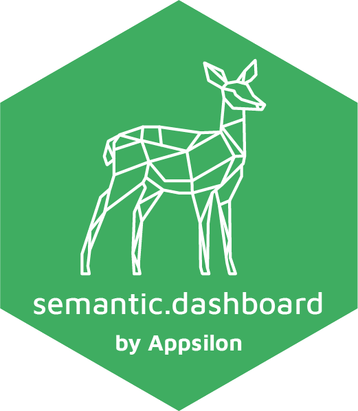
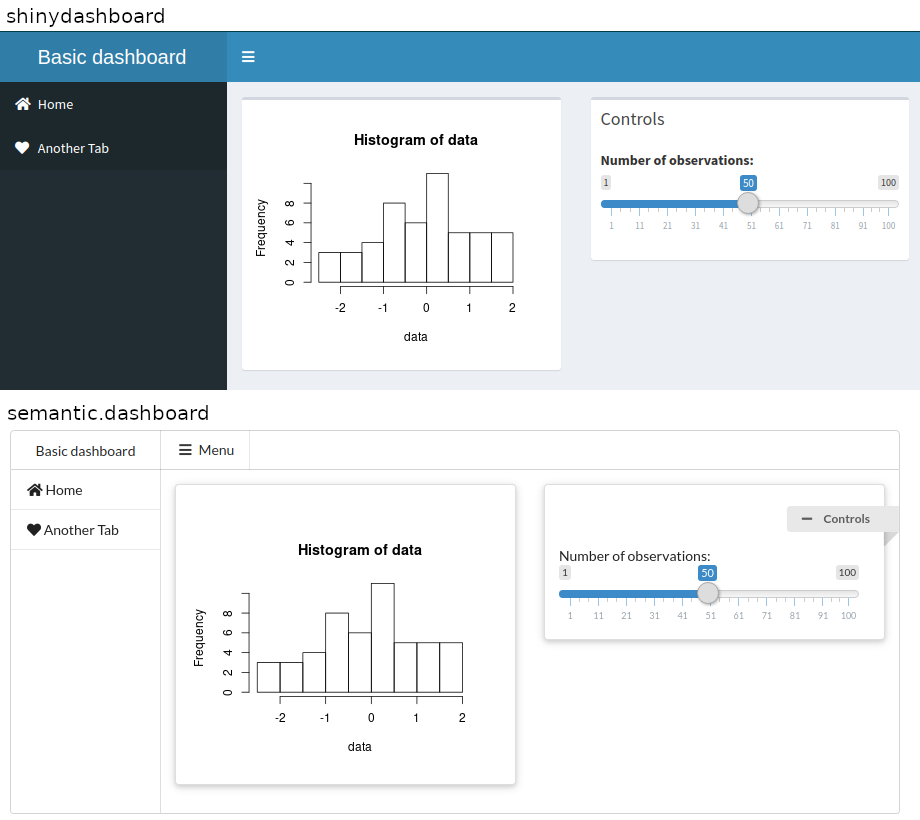

Dashboard with Semantic UI Support for Shiny.
Are you fed up with ordinary shinydashboard look?
Give your app a new fresh look with Fomantic UI support.
library(shiny) library(shinydashboard) # <-- Change this line to: library(semantic.dashboard) ui <- dashboardPage( dashboardHeader(title = "Basic dashboard"), dashboardSidebar(sidebarMenu( menuItem(tabName = "home", text = "Home", icon = icon("home")), menuItem(tabName = "another", text = "Another Tab", icon = icon("heart")) )), dashboardBody( fluidRow( box(plotOutput("plot1", height = 250)), box( title = "Controls", sliderInput("slider", "Number of observations:", 1, 100, 50) ) ) ) ) server <- function(input, output) { set.seed(122) histdata <- rnorm(500) output$plot1 <- renderPlot({ data <- histdata[seq_len(input$slider)] hist(data) }) } shinyApp(ui, server)

semantic.dashboard offers basic functions for creating dashboard with Fomantic UI.
How to install?
Install shiny.semantic library first. Here you can find how.
You can install a stable version semantic.dashboard from CRAN repository:
The development version can be installed from GitHub using remotes.
To install previous version you can run:
Example
You can find examples in the examples/ folder of the GitHub repository.
You can check documentation for tutorials.
How to contribute?
If you want to contribute to this project please submit a regular PR, once you’re done with new feature or bug fix. Please check development/README.md first! It contains useful information that will help you run your dev environment for semantic.dashboard.
Changes in documentation
Both repository README.md file and an official documentation page are generated with Rmarkdown, so if there is a need to update them, please modify accordingly a README.Rmd file and use “Knit”.
Documentation is rendered with pkgdown. Just run pkgdown::build_site() after rendering new README.md.
Troubleshooting
We used the latest versions of dependencies for this library, so please update your R environment before installation.
However, if you encounter any problems, try the following:
- Up-to-date R language environment
- Installing specific dependent libraries versions
- shiny.semantic
Appsilon

Appsilon is the Full Service Certified RStudio Partner. Learn more at appsilon.com.
Get in touch dev@appsilon.com